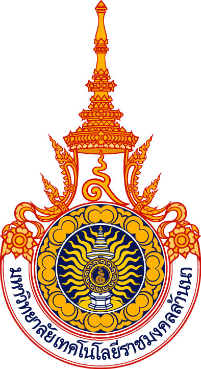

กระบวนการและแบบจำลองการทดสอบ
กระบวนการทดสอบ ISO/IEC/IEEE 29119-2 · แบบจำลองวีและ Agile
ระดับและชนิดของการทดสอบ · V&V Strategy ของทีม
จบช่วงนี้ ทีมจะเขียน V&V Strategy ข้อ 2–5 ได้
- 13:00V&V และระดับความสำคัญ
- 14:10กระบวนการและแบบจำลองการทดสอบ
- 15:05ความต้องการที่ทดสอบได้ และ SRS 1.0
- 15:50งานหลังเรียน และคำถามท้ายคาบ
เริ่มจากสิ่งที่อ่านมา
ระดับการทดสอบมี 4 ระดับ อะไรบ้าง และระดับไหนที่ผู้ใช้เป็นคนตัดสิน
ยังไม่ได้อ่านก็ตอบได้จากประสบการณ์โครงงาน อาจารย์จะสรุปในสไลด์ระดับการทดสอบ
การทดสอบมีกระบวนการ ไม่ใช่แค่การรันโปรแกรม
มาตรฐานแบ่งงานทดสอบเป็น 3 ชั้น ชั้นบนกำหนดกติกา ชั้นกลางวางแผนและคุม ชั้นล่างคือการทดสอบจริงที่วนซ้ำได้หลายรอบในแต่ละ Sprint
จุดตรวจ CP1–CP5 เดินตามกระบวนการทดสอบ
| กระบวนการใน 29119-2 | สิ่งที่ทีมทำในวิชานี้ | จุดตรวจ |
|---|---|---|
| วางแผนการทดสอบ | V&V Strategy (สัปดาห์นี้) แล้วขยายเป็นแผนการทดสอบหลัก ทะเบียนความเสี่ยง และการประมาณการ | D06 → CP2 |
| ออกแบบและสร้างกรณีทดสอบ | กรณีทดสอบ black-box และ white-box ที่สอบย้อนกลับถึงความต้องการ และ unit test | CP3 |
| เตรียมสภาพแวดล้อม | ข้อมูลทดสอบ seed script และชุดทดสอบอัตโนมัติใน CI | D12, D15 |
| รันการทดสอบ และรายงานข้อบกพร่อง | integration, system, NFR, UAT และบันทึกข้อบกพร่องเป็น issue พร้อมป้าย | CP4 |
| ติดตามและควบคุม | V&V dashboard ตัวชี้วัด และการวิเคราะห์สาเหตุ | D16 |
| ปิดการทดสอบ | Test Completion Report และข้อเสนอ go/no-go | CP5 |
ทำครบภาค ทีมจะได้หลักฐานครบทุกกระบวนการ ใช้เป็นบทการทดสอบในเล่ม ENGSE212 ได้
แบบจำลองวี: ฝั่งซ้ายคือฐานของการทดสอบฝั่งขวา
หลักของแบบจำลองวี: ทุกกิจกรรมพัฒนามีกิจกรรมทดสอบคู่กัน และออกแบบการทดสอบได้ทันทีที่เอกสารฝั่งซ้ายเสร็จ ไม่ต้องรอโค้ด เพราะฉะนั้น SRS ต้องดีพอให้ออกแบบการทดสอบได้
ใน Agile แบบจำลองวีเกิดขึ้นทุก Sprint ในขนาดเล็ก
โครงงานของคุณพัฒนาเป็น Sprint
- ทุก Sprint มีทั้งพัฒนาและทดสอบ ไม่รวมไปทดสอบตอนท้าย
- ฟีเจอร์ถือว่าเสร็จเมื่อผ่านเกณฑ์ยอมรับ และมี unit test (Definition of Done)
- ทุก Sprint ชุด regression ใหญ่ขึ้น จึงต้องทดสอบอัตโนมัติ
ทีมในห้องตอนนี้ (จากแบบลงทะเบียน)
| ยังไม่เริ่มเขียนโค้ด | 6 ทีม |
| ความคืบหน้า 1–25% | 7 ทีม |
| 26–50% | 5 ทีม |
| 51–75% | 2 ทีม |
ส่วนใหญ่ยังอยู่ต้นวงจร เป็นจังหวะที่ดีที่สุดที่จะวางการทดสอบไว้ใน Sprint ตั้งแต่แรก แทนที่จะไปเร่งทดสอบตอนใกล้สอบโครงงาน
Agile testing quadrants: การทดสอบ 4 แบบที่ต้องมีให้ครบ
ครบ 4 ช่องจึงมั่นใจได้ทั้ง verification (Q1, Q2) และ validation (Q3, Q4) ใช้ตารางนี้ตรวจว่า V&V Strategy ของทีมขาดช่องไหน
test pyramid: ทดสอบล่างมาก บนน้อย
ทำไมฐานกว้าง
unit test รันเร็ว ชี้จุดผิดได้ชัด E2E ช้า เปราะ และบอกได้แค่ว่ามีอะไรผิดสักที่
ห้องเราตอนนี้
4 จาก 20 ทีมมี unit test บางส่วน และ3 ทีมใช้ GitHub Actions แล้ว เป้าหมายภาคนี้คือทุกทีมมีชุดทดสอบรูปปิรามิดที่รันใน CI ทุก pull request
4 ระดับ แต่ละระดับมีเป้าหมายและฐานของตัวเอง
| ระดับ | ทดสอบอะไร | ฐานของการทดสอบ | ข้อบกพร่องที่มักพบ | ในวิชานี้ |
|---|---|---|---|---|
| component | หน่วยเล็กที่สุดแยกเดี่ยว ฟังก์ชัน คลาส โมดูล | การออกแบบโมดูล โค้ด | ตรรกะผิด ค่าขอบ | ครั้งที่ 8 |
| integration | การเชื่อมต่อระหว่างส่วนประกอบ และกับระบบภายนอก | สถาปัตยกรรม API spec | รูปแบบข้อมูลไม่ตรง ลำดับเรียกผิด | ครั้งที่ 10 |
| system | ทั้งระบบแบบ end-to-end รวมคุณภาพที่ไม่ใช่ฟังก์ชัน | SRS use case | ฟังก์ชันขาด ช้า ไม่ปลอดภัย | ครั้งที่ 11–12 |
| acceptance | ผู้ใช้ตัดสินว่ายอมรับไหม (UAT, alpha, beta) | ความต้องการทางธุรกิจ เกณฑ์ยอมรับ | ใช้งานจริงไม่ได้ ไม่ตรงความคาดหวัง | ครั้งที่ 11–13 |
ระดับ acceptance คือคำตอบของคำถามเปิดเมื่อช่วงแรก ทีม A ขาดระดับนี้ · คำถามในแชตตอนต้นช่วง: ผู้ใช้เป็นคนตัดสินที่ระดับ acceptance
ชนิดการทดสอบ 4 กลุ่ม ใช้ได้กับทุกระดับ
ระดับ คือทดสอบที่ไหน ชนิด คือทดสอบอะไร ทุกชนิดทำได้ทุกระดับ เช่น ทดสอบประสิทธิภาพได้ทั้งระดับ component และระดับ system
ข้อบกพร่องนี้ควรจับได้เร็วที่สุดที่ระดับไหน
1 component4 นาที- ฟังก์ชันตรวจเวลาทับกันคืนค่าผิด เมื่อเวลาสิ้นสุดของการจองหนึ่งเท่ากับเวลาเริ่มของอีกการจอง?
- หน้าเว็บส่งวันที่แบบ 01/12/2569 แต่ API รับแบบ 2026-12-01?
- อีเมลแจ้งผลการจองไม่ถูกส่ง เพราะตั้งค่าเซิร์ฟเวอร์อีเมลผิด?
- หน้าตารางห้องใช้เวลา 8 วินาที เมื่อมีผู้ใช้พร้อมกัน 50 คน?
- เจ้าหน้าที่ต้องกด 6 ครั้งเพื่อบันทึกการคืน ช้ากว่าเขียนสมุด?
- แก้บั๊กการยืมแล้ว หน้าจองห้องที่เคยใช้ได้กลับพัง?
จับได้ระดับล่าง ถูกกว่าและหาสาเหตุง่ายกว่า
- ฟังก์ชันตรวจเวลาทับกันคืนค่าผิด เมื่อเวลาสิ้นสุดของการจองหนึ่งเท่ากับเวลาเริ่มของอีกการจองตรรกะและค่าขอบในฟังก์ชันเดียวcomponent
- หน้าเว็บส่งวันที่แบบ 01/12/2569 แต่ API รับแบบ 2026-12-01สองส่วนตกลงรูปแบบข้อมูลไม่ตรงกันintegration
- อีเมลแจ้งผลการจองไม่ถูกส่ง เพราะตั้งค่าเซิร์ฟเวอร์อีเมลผิดเชื่อมต่อกับระบบภายนอกintegration
- หน้าตารางห้องใช้เวลา 8 วินาที เมื่อมีผู้ใช้พร้อมกัน 50 คนคุณภาพที่ไม่ใช่ฟังก์ชันของทั้งระบบsystem
- เจ้าหน้าที่ต้องกด 6 ครั้งเพื่อบันทึกการคืน ช้ากว่าเขียนสมุดทำงานถูกตามสเปก แต่ผู้ใช้ไม่ยอมรับacceptance
- แก้บั๊กการยืมแล้ว หน้าจองห้องที่เคยใช้ได้กลับพังเป็นชนิดการทดสอบ ไม่ใช่ระดับregression
จับคู่ Sprint ของโครงงานกับระดับการทดสอบ
| ระดับ | ทดสอบอะไรใน SE LabBook | Sprint | เครื่องมือ | ผู้รับผิดชอบ |
|---|---|---|---|---|
| component | กฎการจอง (เวลาทับ จองล่วงหน้าไม่เกิน 14 วัน) กฎการยืม (ไม่เกิน 3 ชิ้น) การตรวจสิทธิ์ | 1–2 (ธ.ค.–ม.ค.) | Jest | กิตติ |
| integration | API การจองและการยืมกับฐานข้อมูล ส่งอีเมล เข้าสู่ระบบด้วยบัญชี Microsoft | 2–3 (ม.ค.–ก.พ.) | Supertest, Newman | ธนา |
| system | ทุก use case แบบ end-to-end เวลาตอบสนอง ผู้ใช้พร้อมกัน | 3 (ก.พ.) | Playwright, k6 | พิมพ์ชนก, ธนา |
| acceptance | เจ้าหน้าที่ 2 คน นักศึกษา 10 คน ทำงานจริงตามสถานการณ์ | ปลาย ก.พ. | แบบบันทึก UAT | กิตติ |
กิจกรรมนี้เดิมจะทำเป็นกลุ่มในห้อง วันนี้เรียนออนไลน์ ทีมทำต่อเองเป็นข้อ 2 ของ V&V Strategy ใส่ส่วนของระบบทีมตัวเอง Sprint จริงของ ENGSE212 และชื่อผู้รับผิดชอบ
V&V Strategy: 5 หัวข้อ ใช้ทุกอย่างจากช่วงที่ 1 และ 2
D06 บันทึกเป็น docs/vv/02-vv-strategy.md ยาวประมาณ 1 หน้า · ส่งก่อนเริ่มคาบครั้งที่ 3 อ. 8 ธ.ค. 13:00 น.
แม่แบบ handouts/vv-strategy-template.md และตัวอย่างที่กรอกแล้ว handouts/vv-strategy-example.md อยู่ในการ์ดครั้งที่ 2 ของหน้ารายวิชา
4 ประโยคจากช่วงที่ 2
- 129119-2 แบ่งการทดสอบเป็นชั้นองค์กร ชั้นบริหาร และชั้นการทดสอบจริง จุดตรวจ CP1–CP5 เดินตามกระบวนการนี้
- 2แบบจำลองวี: ทุกเอกสารฝั่งซ้ายเป็นฐานของการทดสอบฝั่งขวา ใน Agile เกิดขึ้นทุก Sprint
- 3quadrants ครบ 4 ช่อง และปิรามิดที่ฐานกว้าง คือชุดทดสอบที่สมดุล
- 4ระดับ = ทดสอบที่ไหน ชนิด = ทดสอบอะไร จับข้อบกพร่องได้ที่ระดับล่างสุดที่ทำได้
พัก 5 นาที ช่วงที่ 3 ว่าด้วย SRS ที่ทดสอบได้ เพราะทุกอย่างในช่วงนี้ต้องมี SRS ที่ดีเป็นฐาน